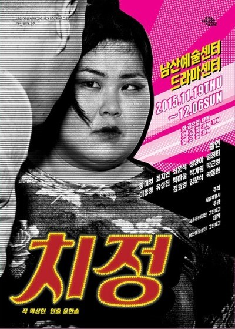
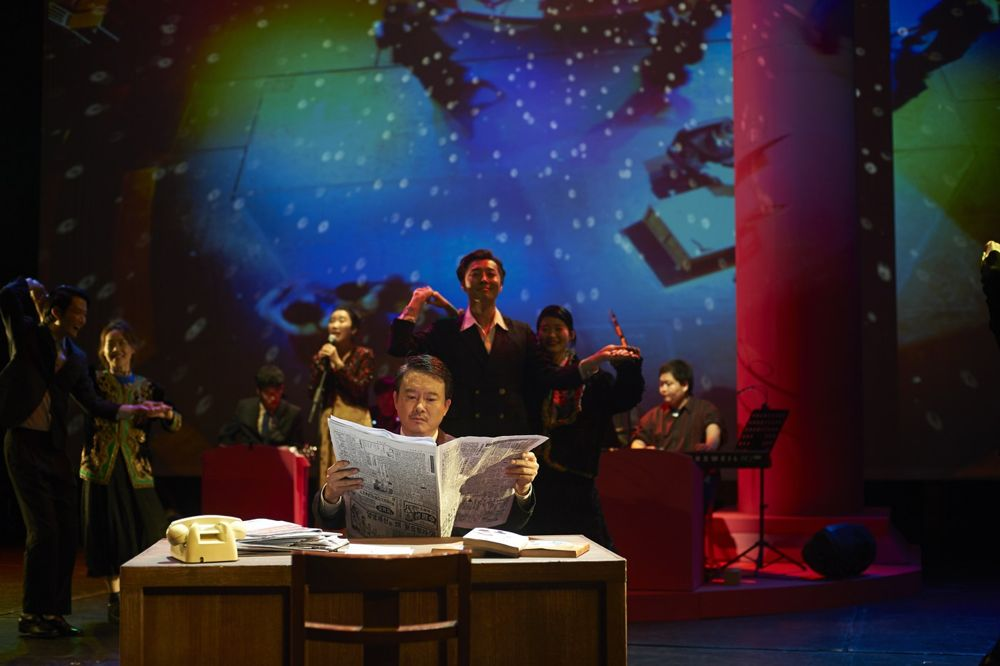

'치정'은 '정치'의 음절을 뒤집은 말장난이다. 이른바 '잘못된 만남'의 이면에 숨어 있는 권력관계, 현대인의 결핍과 과잉, 폭력과 단절을 보여 준다.
2015.11.19–12.6 / 남산예술센터 드라마센터
작: 박상현
연출: 윤한솔
출연: 황미영, 최지연, 최문석, 정양아, 임정희, 이동영, 유성진, 박하늘, 박기원, 박근영, 김효영, 김문식, 곽동현
제작: 남산예술센터, 그린피그
2015 리뷰, 이경미 (네이버 블로그)
이전: 조치원 해문이 | 다음: 비하인드 컷
아카이브로 돌아가기 | 아무 작품이나
발행일 2026.11.13